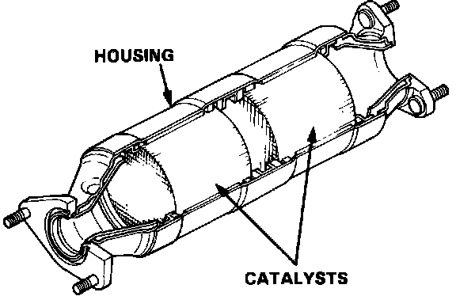

Catalytic Converter: Testing and Inspection
Three-Way Catalytic Converter (TWC):

CATALYTIC CONVERTER INSPECTION
1. Visually inspect exterior of converter. If severe damage is noted, such as dented, crushed or rusted out shell, replace converter.
2. Whenever converter is removed from vehicle, Shine a light through the outlet, observe through the converter to determine if the converter is plugged by carbon buildup or lead contamination.
3. Gently shake the catalytic converter and listen for signs of loose components.
If element is clogged, melted or otherwise damaged, replace converter.
FUNCTIONAL TEST
1. Run the engine at 2,500 rpm for approximately 2 minutes to heat catalytic converter to operating temperature.
2. Connect a surface temperature probe on exhaust inlet of catalytic converter and measure temperature.
3. Connect surface temperature probe on exhaust outlet of catalytic converter and measure temperature.
4. There should be at least 100°F (38° C) increase in temperature from the inlet to the outlet.
5. If temperature differential is less than specified, catalytic converter should be replaced.
EXHAUST RESTRICTION TEST:
Exhaust System Back Pressure Check (Using Oxygen Sensor Mounting Hole):

EXHAUST PRESSURE METHOD AT OXYGEN SENSOR OR CO TEST PIPE
1. Install exhaust backpressure tester in place of Oxygen sensor (or CO test pipe).
2. With engine idling at normal operating temperature, the gauge reading should not exceed 8.6 kPa (1.25 psi).
3. Increase engine speed to 2000 rpm. Gauge reading should not exceed 20.7 kPa (3 psi).
4. If backpressure at either speed exceeds specification, a restricted exhaust system is indicated.
5. Inspect exhaust system for a collapsed pipe, heat distress or possible internal muffler failure.
6. If no obvious reasons for excessive exhaust system backpressure are found, suspect a restricted catalytic converter.
7. After completing test, coat threads of oxygen sensor (if removed) with anti-seize compound prior to reinstallation.